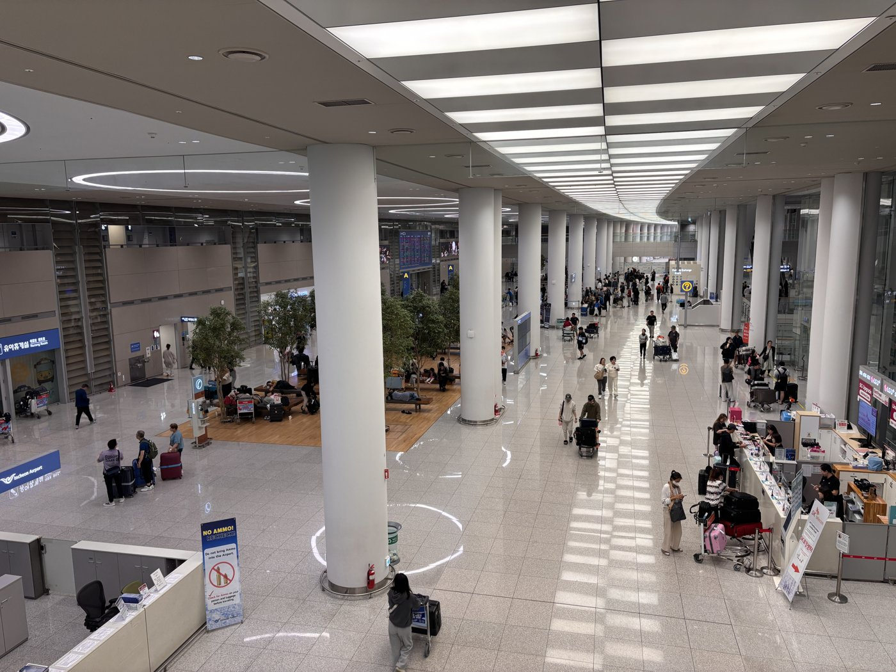

인천공항공사, '공공기관 AI 혁신 챌린지' 대상…AI 항공안전관리체계
재정경제부·과학기술정보통신부 주최, AI 활용 우수사례 부문 최고등급
하루 운항 1200회·여객 21만명 공항, 착륙부터 이륙까지 AI 감시
관제 영상 분석·접현 장애물 자동 식별
AI경제저널=김갑봉 기자 | 인천국제공항공사는 「2026년 공공기관 AI 혁신 챌린지」에서 AI 활용 우수사례 부문 대상을 받았다고 지난달 28일 밝혔다. 수상 사례는 「AI 분석 기반 항공기 운항안전 관리체계 개선성과」다.
공공기관 AI 혁신 챌린지는 재정경제부와 과학기술정보통신부가 주최해 공공기관의 AI 혁신과 대국민 서비스 개선 성과를 시상한다. 시상식은 지난달 28일 서울 마포구 누리꿈스퀘어에서 열렸다.
하루 운항 1200회, 여객 21만명
공사에 따르면 인천공항의 하루 평균 운항은 약 1200회, 여객은 21만명이다. 관제와 항공기 운항·접현, 지상조업 등 여러 분야를 아우르는 안전관리가 필요하다.

공사는 「항공사고 제로, 국민안심 인천공항」을 목표로 AI 기반 항공안전관리체계를 만들었다. AI 예측 데이터로 공항 운영 전 과정의 위험요인을 미리 예측하고 탐지한다.
착륙부터 이륙까지 AI 감시
이 체계는 항공기 착륙부터 이륙까지를 AI로 실시간 감시하고 위험·이상 징후를 미리 예측한다. 항공관제 과정에서는 AI 영상 분석으로 위험 상황과 이상 행동을 실시간으로 살핀다.
항공기를 탑승교에 붙이는 접현 유도 과정에서는 AI가 항공기와 장애물을 자동으로 식별하고, 저시정이나 낙뢰 같은 위험 상황도 실시간으로 알린다.
공사는 인력과 육안에 기대던 사후 관리에서 AI 기반 사전 예방으로 안전관리 방식이 바뀌었다고 설명했다. 앞으로 AI 안전관리 기술과 적용 범위를 넓혀 공항 운영 전반으로 확산할 계획이다.
김범호 인천국제공항공사 사장직무대행은 "앞으로도 AI 기술을 공항 전 분야로 확대하고 우수성과를 확산해 국민이 체감하실 수 있는 혁신성과를 지속 창출해 나가겠다"고 말했다.
참고문헌
- "인천공항공사, 재경부 '공공기관 AI 혁신 챌린지' 대상 수상", 인천국제공항공사, 2026.10.28., https://www.airport.kr/bbs/co_ko/84/139651/artclView.do
[사진 출처]
- [사진1] Choikwangmo25, "2025-10-14 17.17.48 Incheon International Airport.jpg", 위키미디어 공용, CC0, 2025.10.14. 촬영, https://commons.wikimedia.org/wiki/File:2025-10-14_17.17.48_Incheon_International_Airport.jpg
관련기사
- 인천공항공사, 국제항공화물포럼서 대한항공·LX판토스·한진과 공동 홍보관
- 지방공항 외국인 입국 37% 늘어 324만명…수도권 공항의 두 배
- 김포공항 국제선 주차장, 로봇이 대신 주차…시범 운영 시작
- 두 공항공사 '청년 AI 서포터즈' 마무리…분실 방지·공항 시간 플래너 제안
저작권자 © AI경제저널 무단전재 및 재배포, AI학습 및 활용 금지